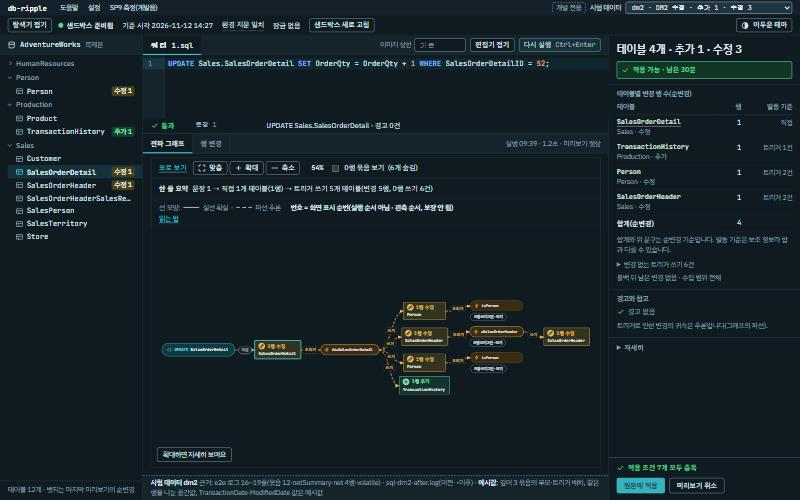
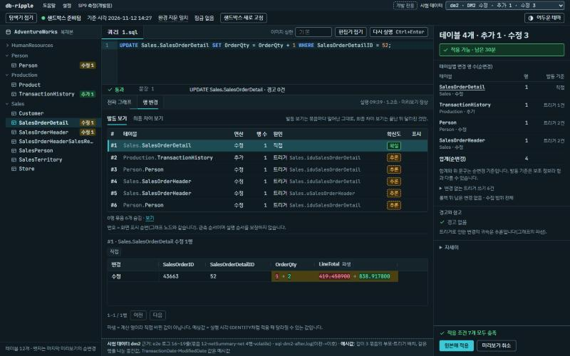
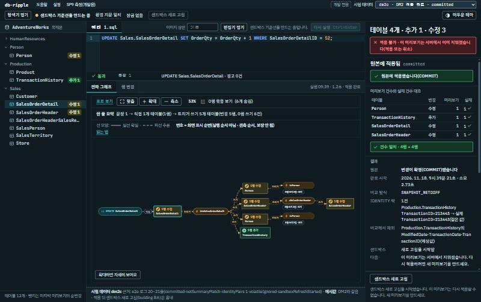
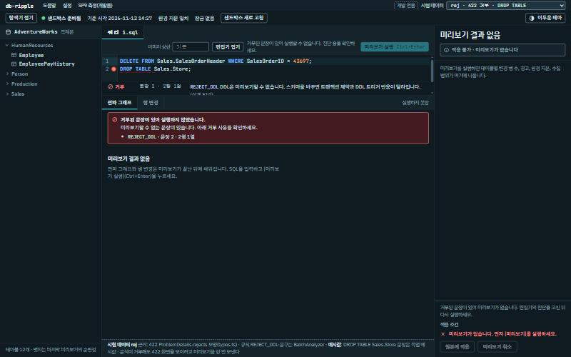
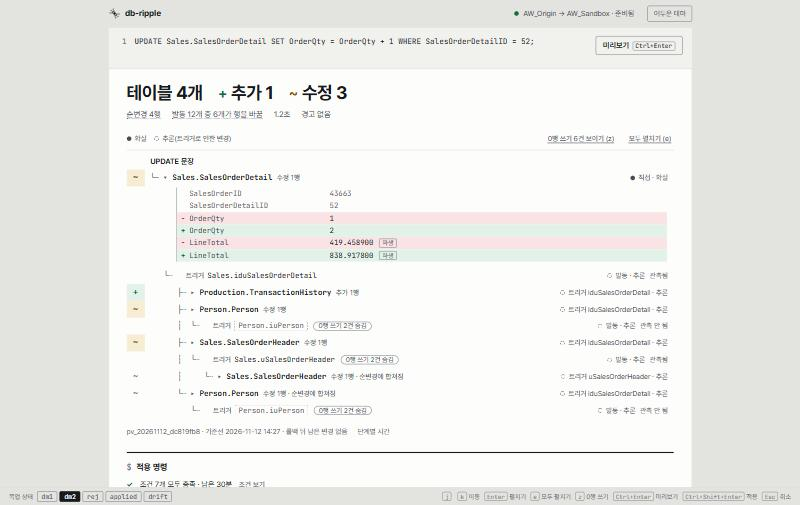

지금 화면(v6 구현)의 문제 7가지와, 배치부터 다시 짠 시안 4종. 시안은 모두 같은 실측 시험 데이터(DM1 삭제, DM2 트리거 수정, 422 거부, DM2 적용 완료)로 그렸습니다. 각 시안 오른쪽 아래 전환기나 주소 #state=dm2&theme=dark로 상태·테마를 바꿀 수 있습니다.
지금 화면의 문제
1440×900, 시험 데이터 모드(?fixture=)로 내장 브라우저에서 본 결과입니다.
같은 숫자가 네 곳에 나온다.탐색기 뱃지, 그래프 노드, 오른쪽 요약 표, 행 변경 목록이 모두 "SalesOrderDetail 수정 1"을 말한다. 어디가 주인공인지 없다.
설명문이 화면을 덮는다."번호 = 화면 표시 순번(실행 순서 아님 · 관측 순서, 보장 안 됨)", "합계와 위 문구는 순변경 기준…", "읽는 법", "확대하면 자세히 보여요". 화면 구조가 말하지 못해 문장으로 때운다.
그래프가 작고 비어 있다.DM2에서 맞춤 배율 54%, 노드 글자가 8~9px로 보이고 캔버스 절반 넘게 빈 공간. 위에 툴바·한 줄 요약·범례 세 줄이 공간을 먹는다.
상태가 서로 모순된다.적용 완료 화면에 빨간 "적용 불가 · 이미 지워졌습니다"가 초록 "원본에 적용됨" 바로 위에 뜬다. 거부 화면은 "미리보기 없음"을 네 곳에서 말한다.
가장 위험한 버튼이 가장 약하다.[원본에 적용]이 오른쪽 맨 아래 작은 버튼이고 [미리보기 취소]와 무게가 같다. 옆에 "무엇이 바뀌는지"가 없다.
상단 띠가 늘 시끄럽다.샌드박스·기준 시각·환경 지문·잠금이 다 정상이어도 같은 무게의 칩으로 늘 떠 있다.
글자 위계가 없다.거의 전부 작은 모노스페이스에 갈색·청록 테두리 상자. 제목·본문·메타가 크기 대신 색으로만 갈리고, 어두운 테마 대비가 낮다.

DM2 전파 그래프: 노드가 작고 위쪽 설명 세 줄

DM2 행 변경: 같은 숫자가 탐색기·목록·레일에 반복

적용 완료: 빨간 "적용 불가"와 초록 "적용됨"이 같이

거부: 같은 사실을 네 곳에서
시안 4종
지난 라운드(IDE 워크벤치·영향 리포트·그래프 캔버스·단계 안내)와 겹치지 않게 방향을 새로 잡았습니다.

1. 플랜
terraform plan처럼 결과 전체를 한 문서로. 그래프 없이 들여쓴 트리, 줄마다 + ~ − 표시, 펼치면 그 자리에 열 단위 diff.
강점
가장 빨리 읽힌다. j/k·Enter·z로 키보드만으로 끝까지 간다. 그래프 배치가 없어 구현이 가장 가볍다.